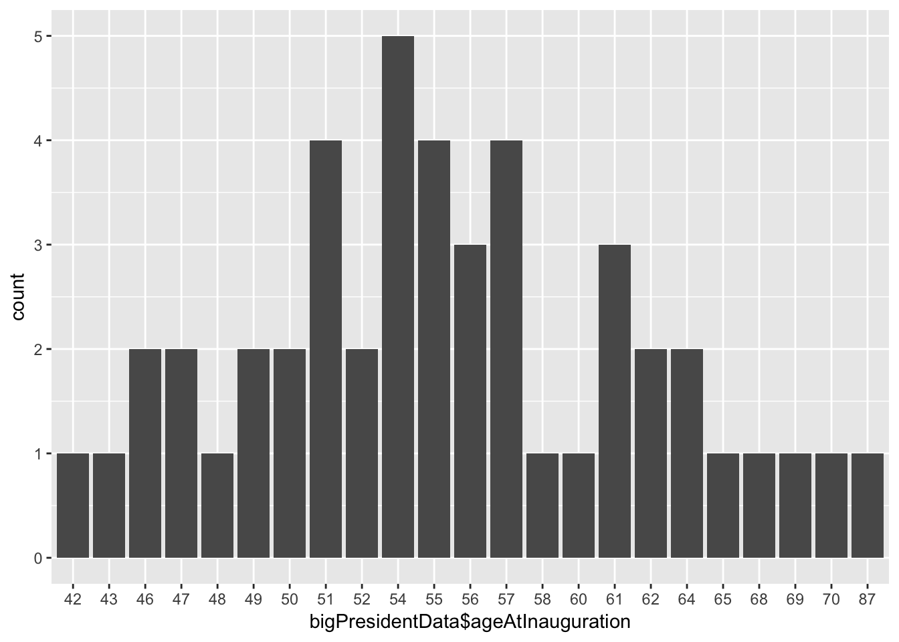

Exploratory exercise - no solution here.
makeDataReport()Run the makeDataReport() function to make your own report for the bigPresidentData and look through it. What legitimate errors are found? What warnings are unnecessary?
We open the dataMaid package, load the bigPresidentData dataset and run our first data report:
#open dataMaid
library(dataMaid)
#load data
data(bigPresidentData)#make data report for it
makeDataReport(bigPresidentData)We see that the report has identified the following legitimate errors:
lastName entries (for president Truman) (validity)firstName variable (validity)orderOfPresidency is stored as a factor variable, although it might more naturally be stored as a numeric (validity)Inf (infinity) occurs as a length of presidency (validity)ageAtInauguration has been misclassified as a categorical variable, even though it is supposed to be numeric (validity)On the other hand, the following warnings are not really necessary:
lastName, firstName, orderOfPresidency, stateOfBirth, party variables have less than five observations.sex only containing one level (“male”), but this is not a mistake in the dataethnicity variable, the value African American has less than five observations. However, this is not a mistake in the data either.Try calling help(makeDataReport) and look at the documentation for the argument treatXasY. Use this argument in a new call to makeDataReport() so that for example the favoriteNumber variable will be handled like a numeric variable
We make a new report where variables of class complex (like favoriteNumber) are handled as numeric variables:
makeDataReport(bigPresidentData, treatXasY = list(complex = "numeric"),
replace = TRUE)Note that we can see that this was succesfull in two ways:
favoriteNumber in the Variable List, where we can see that the summaries usually used for numeric variables are now appliedAre there any errors that does not pop up using the makeDataReport() function? What about consistency in the data? What about uniqueness in the data?
For consistency, we refer to the exercises below. But for uniqueness, one may note that President Eisenhower appears twice in the data, one the with the first name “Dwight” and the second time with the first name “Dwight D”. Note that this type of data problem is not something that dataMaid screens for (because whether or not uniqueness of obsevations is expected is very context-specific).
Use allCheckFunctions() to find out which checkFunction does the check for less than 5 unique values. Check that this function is indeed among the default checkFunctions for character variables by calling defaultCharacterChecks().
We call allCheckFunctions() to see that check functions are available:
allCheckFunctions()| name | description |
|---|---|
| identifyCaseIssues | Identify case issues |
| identifyLoners | Identify levels with < 6 obs. |
| identifyMissing | Identify miscoded missing values |
| identifyNums | Identify misclassified numeric or integer variables |
| identifyOutliers | Identify outliers |
| identifyOutliersTBStyle | Identify outliers (Turkish Boxplot style) |
| identifyWhitespace | Identify prefixed and suffixed whitespace |
| isCPR | Identify Danish CPR numbers |
| isEmpty | Check if the variable contains only a single value |
| isKey | Check if the variable is a key |
| isSingular | Check if the variable contains only a single value |
| isSupported | Check if the variable class is supported by dataMaid. |
| classes |
|---|
| character, factor |
| character, factor |
| character, Date, factor, integer, labelled, logical, numeric |
| character, factor, labelled |
| Date, integer, numeric |
| Date, integer, numeric |
| character, factor, labelled |
| character, Date, factor, integer, labelled, logical, numeric |
| character, Date, factor, integer, labelled, logical, numeric |
| character, Date, factor, integer, labelled, logical, numeric |
| character, Date, factor, integer, labelled, logical, numeric |
| character, Date, factor, integer, labelled, logical, numeric |
We see that the check function identifyLoners looks for levels with strictly less than 6 observations. This is the function we were looking for. Let’s see if it is among the default options used in makeDataReport() for checking character variables:
defaultCharacterChecks()## [1] "identifyMissing" "identifyWhitespace" "identifyLoners"
## [4] "identifyCaseIssues" "identifyNums"– and it’s there.
Use the checks argument, setChecks() and defaultCharacterChecks() to remove the “less than 5 unique values”-check from the checks performed for character variables. Look at the overview table on the first page of your report. Can you find a difference?
We remove the identifyLoners check function from the checks used for character variables in a data report:
makeDataReport(bigPresidentData,
checks = setChecks(character = defaultCharacterChecks(remove = "identifyLoners")),
replace = TRUE)We note that in the table in the Data Report Overview that marks what checks were performed, “Identify levels with <6 obs.” is no longer checked for character variables. And if we look at the character variables in the Variable List, we also see that it is no longer performed.
If you are unsure about exactly what happens in the code bit above, try running the functions one by one and look at the output:
defaultCharacterChecks()## [1] "identifyMissing" "identifyWhitespace" "identifyLoners"
## [4] "identifyCaseIssues" "identifyNums"defaultCharacterChecks(remove = "identifyLoners")## [1] "identifyMissing" "identifyWhitespace" "identifyCaseIssues"
## [4] "identifyNums"setChecks()## $character
## [1] "identifyMissing" "identifyWhitespace" "identifyLoners"
## [4] "identifyCaseIssues" "identifyNums"
##
## $factor
## [1] "identifyMissing" "identifyWhitespace" "identifyLoners"
## [4] "identifyCaseIssues" "identifyNums"
##
## $labelled
## [1] "identifyMissing" "identifyWhitespace" "identifyLoners"
## [4] "identifyCaseIssues" "identifyNums"
##
## $numeric
## [1] "identifyMissing" "identifyOutliers"
##
## $integer
## [1] "identifyMissing" "identifyOutliers"
##
## $logical
## NULL
##
## $Date
## [1] "identifyOutliers" "identifyMissing"setChecks(character = defaultCharacterChecks(remove = "identifyLoners"))## $character
## [1] "identifyMissing" "identifyWhitespace" "identifyCaseIssues"
## [4] "identifyNums"
##
## $factor
## [1] "identifyMissing" "identifyWhitespace" "identifyLoners"
## [4] "identifyCaseIssues" "identifyNums"
##
## $labelled
## [1] "identifyMissing" "identifyWhitespace" "identifyLoners"
## [4] "identifyCaseIssues" "identifyNums"
##
## $numeric
## [1] "identifyMissing" "identifyOutliers"
##
## $integer
## [1] "identifyMissing" "identifyOutliers"
##
## $logical
## NULL
##
## $Date
## [1] "identifyOutliers" "identifyMissing"Use allVisualFunctions() to identify the name of the visualFunction that you need to use if you want base R graphics style plots.
We call allVisualFunctions():
allVisualFunctions()| name | description | classes |
|---|---|---|
| basicVisual | Histograms and barplots using graphics | character, Date, factor, integer, labelled, logical, numeric |
| standardVisual | Histograms and barplots using ggplot2 | character, Date, factor, integer, labelled, logical, numeric |
And we note that we should use basicVisual if we want base R graphics plots.
Call setVisuals() in the console using the all argument to specify the graphics style plots. Try also calling setVisuals() with the new function in the factor and character arguments only.
We use the all argument for the setVisuals() function to specify that all variable classes should use basicVisual as their visual function:
setVisuals(all = "basicVisual")## $character
## [1] "basicVisual"
##
## $factor
## [1] "basicVisual"
##
## $labelled
## [1] "basicVisual"
##
## $numeric
## [1] "basicVisual"
##
## $integer
## [1] "basicVisual"
##
## $logical
## [1] "basicVisual"
##
## $Date
## [1] "basicVisual"We see that basicVisual is indeed listed for all variables. We now specify only character and factor variables to use the basicVisual function:
setVisuals(character = "basicVisual",
factor = "basicVisual")## $character
## [1] "basicVisual"
##
## $factor
## [1] "basicVisual"
##
## $labelled
## [1] "standardVisual"
##
## $numeric
## [1] "standardVisual"
##
## $integer
## [1] "standardVisual"
##
## $logical
## [1] "standardVisual"
##
## $Date
## [1] "standardVisual"Note that we have not yet used these arguments for anything: we have just looked at the functions that are used to specify what visual functions to use.
Use makeDataReport()’s visuals argument and setVisuals() to obtain a data report where character and factor variables use base R graphics plots, while all other variable classes use ggplot2 plots.
This task corresponds to using setVisuals() just like we did in exercise 2.8. E.g. by looking at the documentation for makeDataReport() by using help() or ?, we can find out that the choice of visual functions is specified in the argument visuals. So the following command will make a data report for bigPresidentData where character and factor variables are visualized using the graphics package rather than ggplot2:
makeDataReport(bigPresidentData,
visuals = setVisuals(character = "basicVisual",
factor = "basicVisual"),
replace = TRUE)Experiment with the functions setSummaries(), allSummaryFunctions() and defaultCharacterSummaries() in order to remove “Mode” from the summaries listed for such variables in the data report (using the argument summaries).
First, we see what summary functions are available in order to identify the one that produces the “mode” information:
allSummaryFunctions()| name | description | classes |
|---|---|---|
| centralValue | Compute median for numeric variables, mode for categorical variables | character, Date, factor, integer, labelled, logical, numeric |
| countMissing | Compute proportion of missing observations | character, Date, factor, integer, labelled, logical, numeric |
| minMax | Find minimum and maximum values | integer, numeric, Date |
| quartiles | Compute 1st and 3rd quartiles | Date, integer, numeric |
| uniqueValues | Count number of unique values | character, Date, factor, integer, labelled, logical, numeric |
| variableType | Data class of variable | character, Date, factor, integer, labelled, logical, numeric |
We see that the function centralValue computes modes for categorical variables. Now, we can use defaultCharacterSummaries() and setSummaries() in a call to makeDataReport() to create a report where centralValue is not used for character variables:
makeDataReport(bigPresidentData,
summaries = setSummaries(character = defaultCharacterSummaries(remove = "centralValue")),
replace = TRUE)We would now like a report that only displays the results of checks (no visuals or summaries) and only lists variables that actually were found to have potential problems. But for each problem found, we would like to see all problematic values listed, not just the first 10, as is currently the case. Moreover, we would like to rename the report title (as displayed on the front page) to be “Problem flagging report”, and we would also like to have “problemflagging” appended to the file name of the report, so that we can easily tell it apart from the usual data report.
This customized report can be generated in the following way:
makeDataReport(bigPresidentData, mode = "check",
onlyProblematic = TRUE,
maxProbVals = Inf,
reportTitle = "Problem flagging report",
vol = "problemflagging")Here, * mode = "check" specifies that we only want checks done - no visuals nor summaries * onlyProblematic = TRUE makes sure that one variables for which problems were found are included in the report * maxProbVals = Inf means that there is no upper limit (or, an infinite one, if you will) for how many problematic values are printed in the checks * reportTitle = "Problem flagging report" puts “Problem Flagging Report” as the title on the first page * vol = "problemflagging"appends “problemflagging” to the file name so that it now reads “dataMaid_bigPresidentDataproblemflagging” (with a file extension depending on you operating system and availability of LaTeX.)
dataMaid interactivelyRun check(bigPresidentData$ageAtInauguration), visualize(bigPresidentData$ageAtInauguration), and summarize(bigPresidentData$ageAtInauguration) and verify that you obtain information identical to what you saw in the report previously generated by makeDataReport(bigPresidentData).
We run the three check/visualize/summarize steps in the variable ageAtInauguration interactively:
check(bigPresidentData$ageAtInauguration)## $identifyMissing
## No problems found.
## $identifyWhitespace
## No problems found.
## $identifyLoners
## Note that the following levels have at most five observations: 42, 43, 46, 47, 48, 49, 50, 51, 52, 54 (13 additional values omitted).
## $identifyCaseIssues
## No problems found.
## $identifyNums
## Note: The variable consists exclusively of numbers and takes a lot of different values. Is it perhaps a misclassified numeric variable?visualize(bigPresidentData$ageAtInauguration)
summarize(bigPresidentData$ageAtInauguration)## $variableType
## Variable type: character
## $countMissing
## Number of missing obs.: 0 (0 %)
## $uniqueValues
## Number of unique values: 23
## $centralValue
## Mode: "54"Look at str(check(bigPresidentData$ageAtInauguration)). We try calling the structure (str()) function on the output of a check() call:
ageAtInaugCheck <- check(bigPresidentData$ageAtInauguration)
str(ageAtInaugCheck)## List of 5
## $ identifyMissing :List of 3
## ..$ problem : logi FALSE
## ..$ message : chr ""
## ..$ problemValues: NULL
## ..- attr(*, "class")= chr "checkResult"
## $ identifyWhitespace:List of 3
## ..$ problem : logi FALSE
## ..$ message : chr ""
## ..$ problemValues: NULL
## ..- attr(*, "class")= chr "checkResult"
## $ identifyLoners :List of 3
## ..$ problem : logi TRUE
## ..$ message : chr "Note that the following levels have at most five observations: \\\"42\\\", \\\"43\\\", \\\"46\\\", \\\"47\\\", "| __truncated__
## ..$ problemValues: chr [1:23] "42" "43" "46" "47" ...
## ..- attr(*, "class")= chr "checkResult"
## $ identifyCaseIssues:List of 3
## ..$ problem : logi FALSE
## ..$ message : chr ""
## ..$ problemValues: NULL
## ..- attr(*, "class")= chr "checkResult"
## $ identifyNums :List of 3
## ..$ problem : logi TRUE
## ..$ message : chr "Note: The variable consists exclusively of numbers and takes a lot of different values. Is it perhaps a misclas"| __truncated__
## ..$ problemValues: NULL
## ..- attr(*, "class")= chr "checkResult"We observe that the results are stored in a list-type object with one entry for each check function used. And for each check function, we then find a new list with three entries: problem (TRUE if a problem was found), message (the message printed in the report) and problemValues the values in the varibale that were deemed problematic.
Modify the manual check for presidencyYears such that it only returns potential outliers.
We call check() and use the checks argument to specify that the variable presidencyYears (a numeric) should only be subjected to a check for outliers.
First, we see that class the variable has:
class(bigPresidentData$presidencyYears)## [1] "numeric"Next, we find the name of the check function that identifies potential outliers:
allCheckFunctions()| name | description |
|---|---|
| identifyCaseIssues | Identify case issues |
| identifyLoners | Identify levels with < 6 obs. |
| identifyMissing | Identify miscoded missing values |
| identifyNums | Identify misclassified numeric or integer variables |
| identifyOutliers | Identify outliers |
| identifyOutliersTBStyle | Identify outliers (Turkish Boxplot style) |
| identifyWhitespace | Identify prefixed and suffixed whitespace |
| isCPR | Identify Danish CPR numbers |
| isEmpty | Check if the variable contains only a single value |
| isKey | Check if the variable is a key |
| isSingular | Check if the variable contains only a single value |
| isSupported | Check if the variable class is supported by dataMaid. |
| classes |
|---|
| character, factor |
| character, factor |
| character, Date, factor, integer, labelled, logical, numeric |
| character, factor, labelled |
| Date, integer, numeric |
| Date, integer, numeric |
| character, factor, labelled |
| character, Date, factor, integer, labelled, logical, numeric |
| character, Date, factor, integer, labelled, logical, numeric |
| character, Date, factor, integer, labelled, logical, numeric |
| character, Date, factor, integer, labelled, logical, numeric |
| character, Date, factor, integer, labelled, logical, numeric |
And lastly, we specify that this is the check we want for numeric variables and apply it to presidencyYears:
check(bigPresidentData$presidencyYears,
checks = setChecks(numeric = "identifyOutliers"))## $identifyOutliers
## Note that the following possible outlier values were detected: 12, Inf.Note that the same output could have been obtained by calling identifyOutliers directly:
identifyOutliers(bigPresidentData$presidencyYears)## Note that the following possible outlier values were detected: 12, Inf.Use check() to identify the values that are thought to be potential outliers for the presidencyYears variable and store the result in an object problems. Return the vector with the problemValues and save them to a vector probs.
We store the results of checking presidencyYears for outliers in an object called problems:
problems <- check(bigPresidentData$presidencyYears,
check = setChecks(numeric = "identifyOutliers"))
#look at the contents
problems## $identifyOutliers
## Note that the following possible outlier values were detected: 12, Inf.#look at the structure of the contents
str(problems)## List of 1
## $ identifyOutliers:List of 3
## ..$ problem : logi TRUE
## ..$ message : chr "Note that the following possible outlier values were detected: \\\"12\\\", \\\"Inf\\\"."
## ..$ problemValues: num [1:2] 12 Inf
## ..- attr(*, "class")= chr "checkResult"We now want to save the problem values found by the identifyOutliers check. In order to do this, we must first select the identifyOutliers entry of the list problems and then select the problem values within that list. Below, we show two ways of doing this, using either list indexing ([[]]) or $. We store the problematic values in a new object called probs:
#select first entry of problems using indexing, and then choose
#problemValues by use of the entry name
probs <- problems[[1]]$problemValues
#Select the results from `identifyOutliers` using the entry name,
#and then select `problemValues` also by use of the entry name
probs <- problems$identifyOutliers$problemValuesIn both objects we will find the same contents, namely:
probs## [1] 12 InfUse the vector of potential error values to identify the indices (rows) of bigPresidentData which contain values for presidencyYears that are part of the vector of problem values, probs.
We now identify the row numbers of bigPresidentData where potential outliers were identified in the presidencyYears variable:
probRows <- which(bigPresidentData$presidencyYears %in% probs)
probRows## [1] 37 42A brief comment on the code: The inner statement, bigPresidentData$presidencyYears %in% probs returns a vector of TRUE (for observations that are among the problematic values) and FALSE (for observations that are not in the probs vector). By wrapping the statement in a which() call, instead of getting the logical vector, we get the row numbers of the places in the vector that are TRUE.
Next, we can use the indicies stored in probRows to look at the full dataset for those rows:
bigPresidentData[probRows, ]## lastName firstName orderOfPresidency birthday dateOfDeath
## 32 Roosevelt Franklin 32 1882-01-30 1945-04-12
## 44 Obama Barack 44 1961-08-04 <NA>
## stateOfBirth party presidencyBeginDate presidencyEndDate
## 32 New York Democratic 1901-09-14 1909-03-04
## 44 Hawaii Democratic 2009-01-20 2017-01-20
## assassinationAttempt sex ethnicity presidencyYears
## 32 1 Male Caucasian 12
## 44 0 Male African American Inf
## ageAtInauguration favoriteNumber
## 32 51 6+0i
## 44 47 6+0iAnd now we can see that President Obama was listed to have an infinite presidency – a data error – while Franklin Roosevelt was the president with a 12 year presidency. However, that is not a mistake - it is just an unusual value.
We look at the toyData dataset:
data(toyData)
toyData## # A tibble: 15 x 6
## pill events region change id spotifysong
## <fct> <dbl> <fct> <dbl> <fct> <fct>
## 1 red 1.00 a -0.626 1 Irrelevant
## 2 red 1.00 a 0.184 2 Irrelevant
## 3 red 1.00 a -0.836 3 Irrelevant
## 4 red 2.00 a 1.60 4 Irrelevant
## 5 red 2.00 a 0.330 5 Irrelevant
## 6 red 6.00 b -0.820 6 Irrelevant
## 7 red 6.00 b 0.487 7 Irrelevant
## 8 red 6.00 b 0.738 8 Irrelevant
## 9 red 999 c 0.576 9 Irrelevant
## 10 red NA c -0.305 10 Irrelevant
## 11 blue 4.00 c 1.51 11 Irrelevant
## 12 blue 82.0 . 0.390 12 Irrelevant
## 13 blue NA " " -0.621 13 Irrelevant
## 14 <NA> NaN other -2.21 14 Irrelevant
## 15 <NA> 5.00 OTHER 1.12 15 IrrelevantDo a full check() on the full toyData data frame but only consider the identifyMissing check.
We use check() to look for missing values in the toyData dataset:
check(toyData, checks = setChecks(all = "identifyMissing"))## $pill
## $pill$identifyMissing
## No problems found.
##
## $events
## $events$identifyMissing
## The following suspected missing value codes enter as regular values: 999, NaN.
##
## $region
## $region$identifyMissing
## The following suspected missing value codes enter as regular values: , ..
##
## $change
## $change$identifyMissing
## No problems found.
##
## $id
## $id$identifyMissing
## No problems found.
##
## $spotifysong
## $spotifysong$identifyMissing
## No problems found.Return a vector of values that are potential missing values across the full dataset. We now collect a vector with all potential missing values in the toyData dataset. Note that this will coerce them to all have the same data class (namely, character), as vectors in R can only have a single class.
The strategy goes as follows:
check() like in the previous exercise to identify where there are problems. As we just saw, when called on a full dataset, this function returns a list (of variables) of lists (of checks) of lists (problem status, message and problem values).sapply() to select the problem values from each identifyMissing result. Note that if no problems are found, NULL is stored under problemValues.unlist() to obtain a character vector with the result. Note that this function automatically drops NULL entries.missCheck <- check(toyData, checks = setChecks(all = "identifyMissing"))
missCheckValList <- sapply(missCheck, function(x) x$identifyMissing$problemValues)
missCheckVals <- unlist(missCheckValList)
#Look at the results
missCheckVals## events1 events2 region1 region2
## "999" "NaN" " " "."Use the template to finish writing refCat(). Call it on pill from toyData in order to test whether it is working.
We fill out the missing line of refCat() where we choose the first level of the variable (assuming that v is a factor):
refCat <- function(v, ...) {
val <- levels(v)[1]
res <- val
summaryResult(list(feature = "Reference category", result = res,
value = val))
}And we use it on pill from toyData:
refCat(toyData$pill)## Reference category: blueIt seems to be working as intended. Note that we can also use it in a check() call. For instance, below we add it to the checks performed on factor variables and check the full toyData dataset:
check(toyData,
checks = setChecks(factor = defaultFactorChecks(add = "refCat")))## $pill
## $pill$identifyMissing
## No problems found.
## $pill$identifyWhitespace
## No problems found.
## $pill$identifyLoners
## Note that the following levels have at most five observations: blue.
## $pill$identifyCaseIssues
## No problems found.
## $pill$identifyNums
## No problems found.
## $pill$refCat
## Reference category: blue
##
## $events
## $events$identifyMissing
## The following suspected missing value codes enter as regular values: 999, NaN.
## $events$identifyOutliers
## Note that the following possible outlier values were detected: 82, 999.
##
## $region
## $region$identifyMissing
## The following suspected missing value codes enter as regular values: , ..
## $region$identifyWhitespace
## The following values appear with prefixed or suffixed white space: .
## $region$identifyLoners
## Note that the following levels have at most five observations: , ., OTHER, a, b, c, other.
## $region$identifyCaseIssues
## Note that there might be case problems with the following levels: OTHER, other.
## $region$identifyNums
## No problems found.
## $region$refCat
## Reference category:
##
## $change
## $change$identifyMissing
## No problems found.
## $change$identifyOutliers
## Note that the following possible outlier values were detected: 1.12, 1.51, 1.6.
##
## $id
## $id$identifyMissing
## No problems found.
## $id$identifyWhitespace
## No problems found.
## $id$identifyLoners
## Note that the following levels have at most five observations: 1, 10, 11, 12, 13, 14, 15, 2, 3, 4 (5 additional values omitted).
## $id$identifyCaseIssues
## No problems found.
## $id$identifyNums
## Note: The variable consists exclusively of numbers and takes a lot of different values. Is it perhaps a misclassified numeric variable?
## $id$refCat
## Reference category: 1
##
## $spotifysong
## $spotifysong$identifyMissing
## No problems found.
## $spotifysong$identifyWhitespace
## No problems found.
## $spotifysong$identifyLoners
## No problems found.
## $spotifysong$identifyCaseIssues
## No problems found.
## $spotifysong$identifyNums
## No problems found.
## $spotifysong$refCat
## Reference category: IrrelevantFirst, try calling allSummaryFunctions() to see what summary functions are already available. We want refCat() to be added to the output of this function. This is done by use of summaryFunction(). Fill in the missing pieces in the code, run it, and try calling allSummaryFunctions() again afterwards.
First, we see what summary functions are available already:
allSummaryFunctions()| name | description | classes |
|---|---|---|
| centralValue | Compute median for numeric variables, mode for categorical variables | character, Date, factor, integer, labelled, logical, numeric |
| countMissing | Compute proportion of missing observations | character, Date, factor, integer, labelled, logical, numeric |
| minMax | Find minimum and maximum values | integer, numeric, Date |
| quartiles | Compute 1st and 3rd quartiles | Date, integer, numeric |
| uniqueValues | Count number of unique values | character, Date, factor, integer, labelled, logical, numeric |
| variableType | Data class of variable | character, Date, factor, integer, labelled, logical, numeric |
And then we make refCat() a proper summary function by using the summaryFunction() function to change its class:
refCat <- summaryFunction(refCat,
description = "Identify reference level",
classes = c("factor")
)and we see that refCat is now added to the output of allSummaryFunctions():
allSummaryFunctions()| name | description | classes |
|---|---|---|
| refCat | Identify reference level | factor |
| centralValue | Compute median for numeric variables, mode for categorical variables | character, Date, factor, integer, labelled, logical, numeric |
| countMissing | Compute proportion of missing observations | character, Date, factor, integer, labelled, logical, numeric |
| minMax | Find minimum and maximum values | integer, numeric, Date |
| quartiles | Compute 1st and 3rd quartiles | Date, integer, numeric |
| uniqueValues | Count number of unique values | character, Date, factor, integer, labelled, logical, numeric |
| variableType | Data class of variable | character, Date, factor, integer, labelled, logical, numeric |
Please note that even though we have written that the function should only be used for factor variables, this is not enforced automatically: It is up to the user to consult allSummaryFunctions() and only apply appropriate summaries.
Run the following code bit, adding refCat() to the summaries used for factor variables and look at the result.
makeDataReport(bigPresidentData,
summaries = setSummaries(factor = defaultFactorSummaries(add = "refCat")),
vol = "_withRefCat")We now see that “reference category” is included among the summaries used for factor variables.
Finish identifyNonStartCase().
Here is an example of how the function can be written. But please note that there are many different approaches for solving the problem. This solution draws on list operations (with sapply()) but avoids regular expressions. Note also that we add default values to the mandatory argument, nMax, so that it is easier to call from the console. However, this default setting will be overwritten both by check() and makeDataReport() if the function is used within one of these functions.
identifyNonStartCase <- function(v, nMax = 10, ...) {
#omit NA values from v and only keep unique values
v <- unique(na.omit(v))
#for each entry in v, split it around blank spaces. Note that this
#function returns a list with one entry per entry in v
vSplit <- strsplit(v, split = " ")
#We then transform all entries of v to be lower case:
vSplitAllLower <- sapply(vSplit, tolower)
#We define a helper function that converts a lower case character
#string into having a capitalized first letter
foo <- function(x) {
capFirstLetters <- toupper(substring(x, 1, 1))
x <- paste(capFirstLetters, substring(x, 2), sep = "")
x
}
#And we use the helper function to obtain a Start Case version of v (first
#as list, then as a variable):
vSplitStartCase <- sapply(vSplit, foo)
vStartCase <- sapply(vSplitStartCase, function(x) paste(x, collapse = " "))
#We can then compare the original v with the Start Case v in order to
#find problems (i.e. places where they differ)
problemPlaces <- v != vStartCase
#The problemValues are then the values in v in the problemPlaces. In
#no problems are found, we store NULL
if (any(problemPlaces)) {
problemValues <- v[problemPlaces]
} else problemValues <- NULL
#We store the a logical indicator of whether a problem was found
problem <- any(problemPlaces)
problemStatus <- list(problem = problem,
problemValues = problemValues)
problemMessage <- "The following values were not in start case:"
outMessage <- messageGenerator(problemStatus, problemMessage, nMax)
checkResult(list(problem = problem,
message = outMessage,
problemValues = problemValues))
}
identifyNonStartCase <- checkFunction(identifyNonStartCase,
description = "Identify entries that are not written in Start Case",
classes = c("character", "factor")
)Use identifyNonStartCase() on the variable stateOfBirth from bigPresidentData. Try using it on all character variables in bigPresidentData by use of the function check().
We use identifyNonStartCase() on stateOfBirth:
identifyNonStartCase(bigPresidentData$stateOfBirth)## The following values were not in start case: New york.And we find the lower-case “New York” entry that we have encountered before. We add identifyNonStartCase to the checks applied on character variables and use it to check bigPresidentData:
check(bigPresidentData,
checks = setChecks(character = defaultCharacterChecks(add = "identifyNonStartCase")))## $lastName
## $lastName$identifyMissing
## No problems found.
## $lastName$identifyWhitespace
## The following values appear with prefixed or suffixed white space: Truman.
## $lastName$identifyLoners
## Note that the following levels have at most five observations: Truman, Adams, Arathornson, Arthur, Buchanan, Bush, Carter, Cleveland, Clinton, Coolidge (30 additional values omitted).
## $lastName$identifyCaseIssues
## No problems found.
## $lastName$identifyNums
## No problems found.
## $lastName$identifyNonStartCase
## No problems found.
##
## $firstName
## $firstName$identifyMissing
## The following suspected missing value codes enter as regular values: ..
## $firstName$identifyWhitespace
## No problems found.
## $firstName$identifyLoners
## Note that the following levels have at most five observations: ., Abraham, Andrew, Aragorn, Barack, Benjamin, Chester, Dwight, Dwight D, Franklin (22 additional values omitted).
## $firstName$identifyCaseIssues
## No problems found.
## $firstName$identifyNums
## No problems found.
## $firstName$identifyNonStartCase
## No problems found.
##
## $orderOfPresidency
## $orderOfPresidency$identifyMissing
## No problems found.
## $orderOfPresidency$identifyWhitespace
## No problems found.
## $orderOfPresidency$identifyLoners
## Note that the following levels have at most five observations: 0, 1, 10, 11, 12, 13, 14, 15, 16, 17 (36 additional values omitted).
## $orderOfPresidency$identifyCaseIssues
## No problems found.
## $orderOfPresidency$identifyNums
## Note: The variable consists exclusively of numbers and takes a lot of different values. Is it perhaps a misclassified numeric variable?
##
## $birthday
## $birthday$identifyOutliers
## Note that the following possible outlier values were detected: 1300-03-01.
## $birthday$identifyMissing
## No problems found.
##
## $dateOfDeath
## $dateOfDeath$identifyOutliers
## Note that the following possible outlier values were detected: 1510-01-01, 1799-12-14.
## $dateOfDeath$identifyMissing
## No problems found.
##
## $stateOfBirth
## $stateOfBirth$identifyMissing
## No problems found.
## $stateOfBirth$identifyWhitespace
## No problems found.
## $stateOfBirth$identifyLoners
## Note that the following levels have at most five observations: Arkansas, California, Connecticut, Georgia, Gondor, Hawaii, Illinois, Indiana, Iowa, Kentucky (12 additional values omitted).
## $stateOfBirth$identifyCaseIssues
## Note that there might be case problems with the following levels: New York, New york.
## $stateOfBirth$identifyNums
## No problems found.
## $stateOfBirth$identifyNonStartCase
## The following values were not in start case: New york.
##
## $party
## $party$identifyMissing
## No problems found.
## $party$identifyWhitespace
## No problems found.
## $party$identifyLoners
## Note that the following levels have at most five observations: Democratic-Republican, Democratic-Republican/National Republican, Democratic/National Union, Dunedain, Federalist, Independent, Republican/National Union, Whig.
## $party$identifyCaseIssues
## No problems found.
## $party$identifyNums
## No problems found.
## $party$identifyNonStartCase
## No problems found.
##
## $presidencyBeginDate
## $presidencyBeginDate$identifyOutliers
## No problems found.
## $presidencyBeginDate$identifyMissing
## No problems found.
##
## $presidencyEndDate
## $presidencyEndDate$identifyOutliers
## No problems found.
## $presidencyEndDate$identifyMissing
## No problems found.
##
## $assassinationAttempt
## $assassinationAttempt$identifyMissing
## No problems found.
## $assassinationAttempt$identifyOutliers
## Note that the following possible outlier values were detected: 1.
##
## $sex
## $sex$identifyMissing
## No problems found.
## $sex$identifyWhitespace
## No problems found.
## $sex$identifyLoners
## No problems found.
## $sex$identifyCaseIssues
## No problems found.
## $sex$identifyNums
## No problems found.
##
## $ethnicity
## $ethnicity$identifyMissing
## No problems found.
## $ethnicity$identifyWhitespace
## No problems found.
## $ethnicity$identifyLoners
## Note that the following levels have at most five observations: African American.
## $ethnicity$identifyCaseIssues
## No problems found.
## $ethnicity$identifyNums
## No problems found.
##
## $presidencyYears
## $presidencyYears$identifyMissing
## The following suspected missing value codes enter as regular values: Inf.
## $presidencyYears$identifyOutliers
## Note that the following possible outlier values were detected: 12, Inf.
##
## $ageAtInauguration
## $ageAtInauguration$identifyMissing
## No problems found.
## $ageAtInauguration$identifyWhitespace
## No problems found.
## $ageAtInauguration$identifyLoners
## Note that the following levels have at most five observations: 42, 43, 46, 47, 48, 49, 50, 51, 52, 54 (13 additional values omitted).
## $ageAtInauguration$identifyCaseIssues
## No problems found.
## $ageAtInauguration$identifyNums
## Note: The variable consists exclusively of numbers and takes a lot of different values. Is it perhaps a misclassified numeric variable?
## $ageAtInauguration$identifyNonStartCase
## No problems found.
##
## $favoriteNumber
## $favoriteNumber$NoChecksPerformed
## No problems found.Add identifyNonStartCase() to the checks used on character variables in a makeDataReport() call on bigPresidentData. Use the argument vol = "_nonStartCase" to give the new report a different file name than the old ones. Compare the new report with an old version. Can you find the description you wrote for identifyNonStartCase() when calling checkFunction()?
We do as told:
makeDataReport(bigPresidentData,
checks = setChecks(character = defaultCharacterChecks(add = "identifyNonStartCase")),
vol = "_nonStartCase")We see that the description is added on the first page of the report in the table that summarizes what checks were performed.
In order to solve the exercises below, you will need to use logical operators in R. Note that their documentation is available through a ?Logic call. Here is a brief summary of the most commonly used logical operators:
&: And. x & y evaluates to TRUE if both x and y evaluate to TRUE. |: Or. x | y evaluates to TRUE if either x or y evaluate to TRUE. !: Not. !x evaluates to TRUE if x evaluates to FALSE (and vice versa).
You will also need to use relational operators, which are documented in ?Comparison:
<: Strictly smaller than. >: Strictly greater than. <=: Smaller than. >=: Greater than. ==: Equals - note the double equality sign! !=: Not equal.
Note that these relational operators are not just implemented for comparing numbers, but also dates.
We create validator objects for each of the combinations of variables below and confront the data with them.
library(validate)birthday, dateOfDeath, presidencyBeginDate and presidencyEndDateIt must hold that birthday is before presidencyBeginDate, which is before presidencyEndDate, which is before dateOfDeath. The last equality does not need to be strict, some presidencies have been known to end at the death of the president. We specify this in a validator:
dateVal <- validator(birthday < presidencyBeginDate,
presidencyBeginDate < presidencyEndDate,
presidencyEndDate <= dateOfDeath)
dateCon <- confront(bigPresidentData, dateVal)
summary(dateCon)## name items passes fails nNA error warning
## 1 V1 47 46 0 1 FALSE FALSE
## 2 V2 47 45 0 2 FALSE FALSE
## 3 V3 47 39 1 7 FALSE FALSE
## expression
## 1 birthday < presidencyBeginDate
## 2 presidencyBeginDate < presidencyEndDate
## 3 presidencyEndDate <= dateOfDeathWe find 1 fail in the third contrain, presidencyEndDate < dateOfDeath. Looking further into it:
bigPresidentData[!values(dateCon)[, 3],] ## lastName firstName orderOfPresidency birthday dateOfDeath
## NA <NA> <NA> <NA> <NA> <NA>
## 26 Roosevelt Theodore 26 1858-10-27 1919-01-06
## NA.1 <NA> <NA> <NA> <NA> <NA>
## NA.2 <NA> <NA> <NA> <NA> <NA>
## NA.3 <NA> <NA> <NA> <NA> <NA>
## NA.4 <NA> <NA> <NA> <NA> <NA>
## NA.5 <NA> <NA> <NA> <NA> <NA>
## NA.6 <NA> <NA> <NA> <NA> <NA>
## stateOfBirth party presidencyBeginDate presidencyEndDate
## NA <NA> <NA> <NA> <NA>
## 26 New York Republican 1933-03-04 1945-04-12
## NA.1 <NA> <NA> <NA> <NA>
## NA.2 <NA> <NA> <NA> <NA>
## NA.3 <NA> <NA> <NA> <NA>
## NA.4 <NA> <NA> <NA> <NA>
## NA.5 <NA> <NA> <NA> <NA>
## NA.6 <NA> <NA> <NA> <NA>
## assassinationAttempt sex ethnicity presidencyYears ageAtInauguration
## NA NA <NA> <NA> NA <NA>
## 26 1 Male Caucasian 7 42
## NA.1 NA <NA> <NA> NA <NA>
## NA.2 NA <NA> <NA> NA <NA>
## NA.3 NA <NA> <NA> NA <NA>
## NA.4 NA <NA> <NA> NA <NA>
## NA.5 NA <NA> <NA> NA <NA>
## NA.6 NA <NA> <NA> NA <NA>
## favoriteNumber
## NA NA
## 26 4+0i
## NA.1 NA
## NA.2 NA
## NA.3 NA
## NA.4 NA
## NA.5 NA
## NA.6 NAWe see that Theodore Roosevelt has a date of death before the noted date of the end of his presidency - but the latter is not correct, rather it is the date of Franklin Roosevelt’s end of presidency. It seems that the dates related to these to presidencies have been mixed up!
presidencyBeginDate, presidencyEndDate and presidencyYearsIt should hold that the difference between presidencyEndDate and presidencyBeginDate, measured in full (rounded down) years should correspond to the contents of presidencyYears. We check this:
durationVal <- validator(presidencyYears == floor((presidencyEndDate - presidencyBeginDate)/365.25))
durationCon <- confront(bigPresidentData, durationVal)
summary(durationCon)## name items passes fails nNA error warning
## 1 V1 47 40 5 2 FALSE FALSE
## expression
## 1 presidencyYears == floor((presidencyEndDate - presidencyBeginDate)/365.25)We find 5 fails and 2 NAs. We look closer at them:
cbind(bigPresidentData[!values(durationCon), c("firstName", "lastName",
"presidencyYears",
"presidencyBeginDate",
"presidencyEndDate")])## firstName lastName presidencyYears presidencyBeginDate
## 26 Theodore Roosevelt 7 1933-03-04
## 21 Chester Arthur 5 1881-09-19
## NA <NA> <NA> NA <NA>
## NA.1 <NA> <NA> NA <NA>
## 32 Franklin Roosevelt 12 1901-09-14
## 44 Barack Obama Inf 2009-01-20
## 39 Jimmy Carter 4 1977-01-20
## presidencyEndDate
## 26 1945-04-12
## 21 1885-03-04
## NA <NA>
## NA.1 <NA>
## 32 1909-03-04
## 44 2017-01-20
## 39 1982-10-01First, we see yet another consequence of the Roosevelt presidency date mixup that we noted above. Next, it seems that Chester Arthur has a disprepancy between his presidency dates and the presidency years variables. In reality, his presidencyYears value has wrongfully been listed as 5 rather than 3 years. Then there is Obamas infinite presidency, which we have also encountered before. And lastly, we see that Jimmy Carter also has a problem. This is due to his presidencyEndDate being wrong.
birthday, ageAtInauguration and presidencyBeginDateFor all these variables to be valid, the age at inauguration should be the number of full years that have passed between the birthday and the date where the presidency begins. Or, formulated as a validator object:
ageVal <- validator(ageAtInauguration == floor((presidencyBeginDate - birthday)/365.25))
ageCon <- confront(bigPresidentData, ageVal)
summary(ageCon)## name items passes fails nNA error warning
## 1 V1 47 44 2 1 FALSE FALSE
## expression
## 1 ageAtInauguration == floor((presidencyBeginDate - birthday)/365.25)We look at the two fails:
bigPresidentData[!values(ageCon),]## lastName firstName orderOfPresidency birthday dateOfDeath
## 26 Roosevelt Theodore 26 1858-10-27 1919-01-06
## NA <NA> <NA> <NA> <NA> <NA>
## 32 Roosevelt Franklin 32 1882-01-30 1945-04-12
## stateOfBirth party presidencyBeginDate presidencyEndDate
## 26 New York Republican 1933-03-04 1945-04-12
## NA <NA> <NA> <NA> <NA>
## 32 New York Democratic 1901-09-14 1909-03-04
## assassinationAttempt sex ethnicity presidencyYears ageAtInauguration
## 26 1 Male Caucasian 7 42
## NA NA <NA> <NA> NA <NA>
## 32 1 Male Caucasian 12 51
## favoriteNumber
## 26 4+0i
## NA NA
## 32 6+0iAnd there we have the Roosevelt mixup again!
orderOfPresidency and presidencyBeginDateOrder of presidency should correspond to presidencyBeginDate such that the presidency that begins first corresponds to the smallest number in orderOfPresidency. This condition can be expressed as a constrain on the ranks of the observations. However, we know that presidencyBeginDate has a missing values (for Aragorn Arathorn), so in order to not let this affect the ordering, we perform the confrontation on the data without missing values.
beginVal <- validator(rank(presidencyBeginDate) == rank(orderOfPresidency))
beginCon <- confront(na.omit(bigPresidentData[, c("presidencyBeginDate", "orderOfPresidency")]),
beginVal)
summary(beginCon)## name items passes fails nNA error warning
## 1 V1 46 44 2 0 FALSE FALSE
## expression
## 1 rank(presidencyBeginDate) == rank(orderOfPresidency)We find two problems. Let’s look further into them. Recall that values(beginCon) is a vector with the value TRUE for all observations that passed the check and FALSE for all others. Thus, !values(beginCon) is FALSE for all observations that passed the check and TRUE for the problematic observations. But we also need to only look at the data for which presidencyBeginDate and orderOfPresidency are non-missing so that the beginCon values correctly correspond to the data. This can be done in the following way:
bigPresidentData[!is.na(bigPresidentData$presidencyBeginDate) &
!is.na(bigPresidentData$orderOfPresidency),
c("firstName", "lastName",
"presidencyBeginDate", "orderOfPresidency")][!values(beginCon), ]## firstName lastName presidencyBeginDate orderOfPresidency
## 26 Theodore Roosevelt 1933-03-04 26
## 32 Franklin Roosevelt 1901-09-14 32We see that presidents Theodore and Franks Roosevelt have discrepancies between their presidency orders and their begin dates. And this is because their presidencyBeginDate values have been switched around.
A mistake in the data has caused two presidencies to overlap. Locate the error using validator() and confront() from validate.
If we sort the data, then this constrain corresponds to requiring that any president (but the first) begins later than or on the date the former president’s period ended. This means that if we drop the first observation from the presidencyBeginDate, then that variable should always be greater or equal to presidencyEndDate, where the last (unfinished) presidency has been dropped. In code:
sortedBPD <- bigPresidentData[order(bigPresidentData$presidencyBeginDate),]
nObs <- nrow(sortedBPD)
orderVal <- validator(presidencyBeginDate[-1] >= presidencyEndDate[-nObs])
orderCon <- confront(sortedBPD, orderVal)
summary(orderCon)## name items passes fails nNA error warning
## 1 V1 46 43 2 1 FALSE FALSE
## expression
## 1 presidencyBeginDate[-1] >= presidencyEndDate[-nObs]We find two problems: One for Ronald Reagan and one for Dwight Eisenhower. We look further into them by also including the presidents that come just before them:
sortedBPD[-1, ][c(which(!values(orderCon)), which(!values(orderCon))-1),]## lastName firstName orderOfPresidency birthday dateOfDeath
## 34 Eisenhower Dwight 34 1890-10-14 1969-03-28
## 40 Reagan Ronald 40 1911-02-06 2004-06-05
## 341 Eisenhower Dwight D 34 1890-10-14 1969-03-28
## 39 Carter Jimmy 39 1924-10-01 <NA>
## stateOfBirth party presidencyBeginDate presidencyEndDate
## 34 Texas Republican 1953-01-20 1961-01-20
## 40 Illinois Republican 1981-01-20 1989-01-20
## 341 Texas Republican 1953-01-20 1961-01-20
## 39 Georgia Democratic 1977-01-20 1982-10-01
## assassinationAttempt sex ethnicity presidencyYears ageAtInauguration
## 34 0 Male Caucasian 8 62
## 40 1 Male Caucasian 8 69
## 341 0 Male Caucasian 8 62
## 39 0 Male Caucasian 4 52
## favoriteNumber
## 34 2+0i
## 40 5+0i
## 341 2+0i
## 39 8+0iWe see that Eisenhower has been listed twice (a uniqueness problem). And Carter’s end of presidency date has been changed such that it is within Reagan’s presidency.
We now show how the data mistakes can be fixed, one by one. Since we advice that this is done in a self contained R-script, we will provide the answers as a commented chunk of R code. Note that we correct all errors, some of which you might not (yet) be aware of.
#Load packages
library(dataMaid)
#Load data
data(bigPresidentData)
#Copy data. This is the data we will make changes to.
bpd <- bigPresidentData
#We fix the following mistake:
#Aragorn Arathornson is included in the dataset.
bpd <- bpd[!(bpd$firstName == "Aragorn" & bpd$lastName == "Arathornson"),]
#We fix the following mistake:
#Trump has "." listed as his first name (firstName).
bpd[bpd$lastName == "Trump", "firstName"] <- "Donald"
#We fix the following mistake:
#Obama's presidency duration is listed as infinite (presidencyYears).
bpd[bpd$lastName == "Obama", "presidencyYears"] <-
floor((bpd$presidencyEndDate[bpd$lastName == "Obama"] -
bpd$presidencyBeginDate[bpd$lastName == "Obama"])/365.25)
#We fix the following mistake:
#Trump's state of birth (New York) was spelled with a lower case "y" (stateOfBirth).
bpd[bpd$lastName == "Trump", "stateOfBirth"] <- "New York"
#We fix the following mistake:
#Truman's last name is prefixed with whitespace (lastName).
bpd[bpd$lastName == " Truman", "lastName"] <- "Truman"
#We fix the following mistake:
#ageAtInauguration is coded as a character variable.
bpd$ageAtInauguration <- as.numeric(bpd$ageAtInauguration)
#We fix the following mistake:
#The dates marking the beginning and end of the presidency
#(presidencyBeginDate, presidencyEndDate) have been switched for Theodore and
#Franklin Roosevelt.
TRbegin <- bpd$presidencyBeginDate[bpd$firstName == "Franklin" & bpd$lastName == "Roosevelt"]
FRbegin <- bpd$presidencyBeginDate[bpd$firstName == "Theodore" & bpd$lastName == "Roosevelt"]
TRend <- bpd$presidencyEndDate[bpd$firstName == "Franklin" & bpd$lastName == "Roosevelt"]
FRend <- bpd$presidencyEndDate[bpd$firstName == "Theodore" & bpd$lastName == "Roosevelt"]
bpd$presidencyBeginDate[bpd$firstName == "Franklin" & bpd$lastName == "Roosevelt"] <- FRbegin
bpd$presidencyBeginDate[bpd$firstName == "Theodore" & bpd$lastName == "Roosevelt"] <- TRbegin
bpd$presidencyEndDate[bpd$firstName == "Franklin" & bpd$lastName == "Roosevelt"] <- FRend
bpd$presidencyEndDate[bpd$firstName == "Theodore" & bpd$lastName == "Roosevelt"] <- TRend
#We fix the following mistake:
#Jimmy Carter's end of presidency date (presidencyEndDate) has been changed such that
#his presidency overlaps with the subsequent president, Ronald Reagan.
bpd$presidencyEndDate[bpd$firstName == "Jimmy" & bpd$lastName == "Carter"] <- as.Date("1975-01-14")
#We fix the following mistake:
#James Garfield's state of birth (stateOfBirth) has been changed from Ohio to Indiana
#(state of birth of Jim Davis, the creator of the cartoon "Garfield").
bpd$stateOfBirth[bpd$firstName == "James" & bpd$lastName == "Garfield"] <- "Ohio"
#We fix the following mistake:
#Calvin Goolidge has had his first name changed to "Hobbes" (firstName).
bpd$firstName[bpd$firstName == "Hobbes"] <- "Calvin"
##We fix the following mistake:
#Chester Arthur has had his presidency duration (presidencyYears) changed from 3 to 5 years
bpd$presidencyYears[bpd$firstName == "Chester" & bpd$lastName == "Arthur"] <- 3
#We fix the following mistake:
#Eisenhower appears twice in the dataset, one time with the first name "Dwight"
#and one time with the first name "Dwight D".
#Note: We delete the observation with the extra "D" as the other presidents do
#not have their middle names included
bpd <- bpd[bpd$firstName != "Dwight D",]
#Save a new copy of the data
save(list = "bpd", file = "bigPresidentData_cleaned.rdata")Use the makeCodebook() function to produce a final codebook that could be passed on as a documentation (of the dataset) for the data analysis.
We make a codebook of bpd:
makeCodebook(bpd, replace = TRUE)Use the option to set shortDescription attributes for the dataset to explain that: a) The information in favoriteNumber have been obtained by consulting an Ouija board or - when that failed - just typing in a number and consequently the accuracy may be low, b) For assassinationAttempt, 1 means yes and 0 means no, c) For the firstName it is literally the first name. No middle names or initials. Also try using the label attribute to add some variable labels of your own choosing. Run the codebook command again.
We add short descriptions:
attr(bpd$favoriteNumber, "shortDescription") <- "The information has been obtained by consulting a Ouija board or - when that failed - just typing in a number. Thus, the accuracy may be low."
attr(bpd$assassinationAttempt, "shortDescription") <- "1 means yes and 0 means no."
attr(bpd$firstName, "shortDescription") <- "Only literal first names, no inclusion of middle names or initials"And we add labels:
attr(bpd$favoriteNumber, "label") <- "Favorite number"
attr(bpd$assassinationAttempt, "label") <- "Was there an assassination attempt on the president?"
attr(bpd$firstName, "label") <- "First name"
attr(bpd$lastName, "label") <- "Last name"
attr(bpd$presidencyYears, "label") <- "Duration of presidency"
attr(bpd$orderOfPresidency, "label") <- "Presidency order"
attr(bpd$birthday, "label") <- "Date of birth"
attr(bpd$dateOfDeath, "label") <- "Date of death"
attr(bpd$stateOfBirth, "label") <- "Birth state of the president"
attr(bpd$party, "label") <- "Party"
attr(bpd$presidencyBeginDate, "label") <- "Date where the presidency begins"
attr(bpd$presidencyEndDate, "label") <- "Date where the presidency ends"
attr(bpd$sex, "label") <- "Sex"
attr(bpd$ethnicity, "label") <- "Ethnicity"
attr(bpd$ageAtInauguration, "label") <- "Age at inauguration"And lastly, we rerun the codebook:
makeCodebook(bpd, replace = TRUE)Thanks for reading! If you have questions or comments for these exercises, don’t hesitate to contact Anne Helby Petersen at [ahpe@sund.ku.dk].